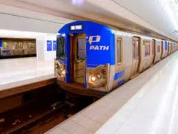
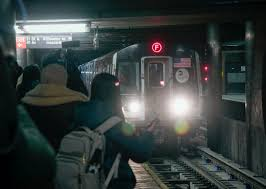
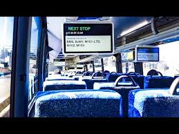

Overall rate: 3/5. Pros: Cheap and give me more options while I was trying to rent an apartment Cons: Slow! Takes about an hour to reach campus. Reddit says: “We all know that PATH offers a cheap connection between New York and New Jersey, but I hate the fact that it's nowhere near as massive as the NYC Subway System.”
First Approach: Traveling with Path to get to City

Second Approach: NYC Subway

Overall rate: 3.5/5. Pros: Faster, Faster, Faster! So many good things happening on the Mahattan Island. Cons: Always Maintenance for no reasons. Last time saw a guy poop in front of me Reddit says: “Its fine overall. You may see some disgusting things now and then. Just keep your wits about you. Dont look like a distracted person staring at your phone the whole time. .”
Third Approach: Bus

Overall rate: 4.5/5. Pros: Cozy! None like path and subway sites. Cons: Trafic on the bright. Since there's a over-the-bright fee just get involved, Things get easier. Reddit says: “I like the bus better than the train for sure. They have outlets to charge your phone, air conditioned and you can look out the window. I personally find it calming.”
New HTML element "Video": War between ME and my CAT
What I learned from Video: The video element lets me play a playable video with built-in controls. I can set attributes like control, loop, autoplay. If the browser doesn’t support the video, the fallback text is shown.
New CSS element "rotateY"
I used transform: rotateY(180deg) along with a perspective property to create a 3D rotation effect. "GO TO ANY PICTURE!! IT WILL BE DIFFERENT". I believe this property wasn’t discussed in detail before, but it’s really powerful for interactive transformations.